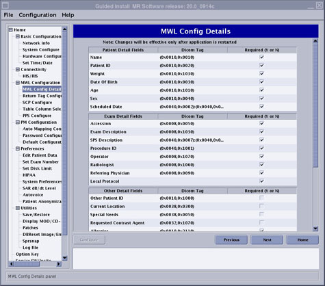
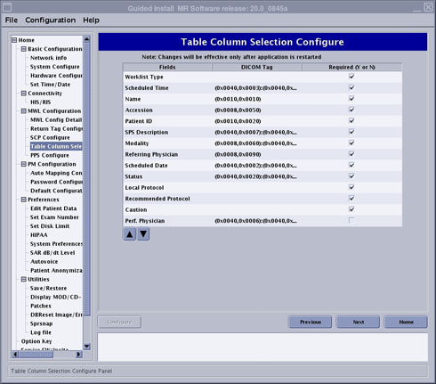
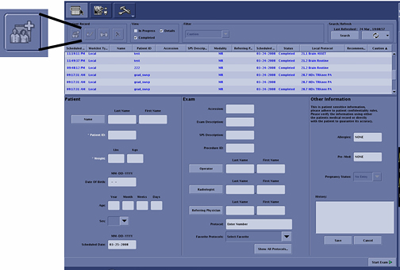
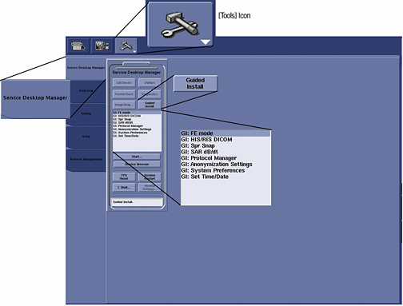

Operating Documentation
Direction 5500113, Rev# 3
Discovery MR450 1.5T Service Methods
Module Version 4.0, Version Date 4/20/09
Operating Documentation |
| Required Persons | Preliminary Reqs | Procedure | Finalization |
|---|---|---|---|
| 1 | Not Applicable | 15 mins | Not Applicable |
This procedure documents the set up and calibration of the system to a clinical hospital information system (HIS) or a radiology information system (RIS) .
| Condition | Reference | Effectivity |
|---|---|---|
Acquire HIS/RIS, filming network information from the customer administrator. | - | - |
From the Common Service Desktop, select the [Configure] button, select the [Guided Install] button, and in FE Mode login as root (password is operator).
Under [Connectivity], select [HIS/RIS].
Illustration 1: HIS/RIS Screen

Enter applicable information in all fields (as provided by site) and click the [Configure] button.
Under [MWL Configuration], select [MWL Config Details].
Illustration 2: MWL Config Details Screen

Illustration 3: MWL Config Details Screen (Continued)

If any of fields, other than the defaults, are desired to appear in the Modality Worklist, select or deselect appropriately and click the [Configure] button.
Under [MWL Configuration], select [Return Tag Configure].
Illustration 4: Return Tag Configuration Screen

If any fields, other than the defaults, are desired by the site to be refreshed in the Modality Worklist, select or deselect appropriately and click the[Configure] button.
Under [MWL Configuration], select [SCP Configure].
Illustration 5: SCP Configure Screen

Click the [New] button to setup a new item.
Enter applicable information in all fields (as provided by site) and click the [Configure] button.
To verify network connectivity, click the [Ping] button.
Under [MWL Configuration], select [Table Column Selection Configure].
Illustration 6: Table Column Selection Configuration Screen

Select or deselect any fields desired to be displayed in the patient record table (located at the top of the scan window) and click the [Configure] button.
Under [MWL Configuration], select [PPS Configure].
| NOTE: | At release of this document, PPS Configure is available with 1.5T systems only. PPS Configure will be available for 3.0T at a later time. |
Illustration 7: PPS Configure Screen

Click the [New] button to setup a new setup.
Enter applicable information in all fields (as provided by site) and click the [Configure] button.
Click the [Work List] icon for the scan screen (see Illustration 8).
Illustration 8: Work List Icon

To confirm the connectivity of the system to the RIS system, go into the scan desktop and select the [New Patient] icon (see Illustration 9).
Illustration 9: New Patient Icon

On the scan screen enter the following:
Patient ID:geservice
Weight:111
Click the [Save] button.
In the Search/Refresh box, click the [Search Data] button (see Illustration 10).
Illustration 10: Search Button

The Search Data window displays as shown in Illustration 11.
Illustration 11: Search Data Window

From this page select how you want to pull information from the RIS system. The Get Patient List options are:
Enter a patient Name, Patient ID, Accession Number, or Procedure ID to define the search.
Selecting This System, which pulls the patient lists entered for this system.
Selecting This Modality pulls the patient list for all MR systems at this facility.
Selecting All Modalities pulls the patient list for all systems associated with this facility. Using this option may cause the scanner to hang if the facility has too large of Work List for all scanners at the site.
Selecting Date Range pulls patient lists for any set day or date range.
After entering the proper Search Data, click the [Search] button (see Illustration 12).
Illustration 12: Search Details Selected

The results appear in the list above the patient information (see Illustration 13).
Illustration 13: Full Work List

From the Common Service Desktop, select the [Guided Install] button, and in FE Mode login as root (see Illustration 14).
Illustration 14: Accessing HIS/RIS Setup

Under [Connectivity] select [HIS/RIS] (see Illustration 15).
Illustration 15: HIS/RIS Setup Screen and Tabs
Ensure that the Hospital Name, Suite ID, Host ID, and Local AE Title are correct for the MR system. The Local Port Number (Host Port) should be set to 4000 (same as the DICOM (Digital Imaging and Communications in Medicine) networking port number for MR systems). These are the parameters that the hospital RIS system uses to identify our system (see Illustration 15).
Under [MWL Configuration], select [SCP Configuration] (see Illustration 16).
Illustration 16: SCP Configure Screen
Ensure the following information with the site network administrator:
Host Name is the site name.
AE Title is the Modality Work List (MWL) Application Entity (AE) title of the RIS system of the site.
IP Address is the internet protocol (IP) address of the RIS server.
Port Number is the port number of the RIS system of the site.
Under [Home], select [Verification] (see Illustration 17.
Illustration 17: Verification Screen

Select [Configure] and confirm no errors.
Select File>Quit.
No finalization steps.